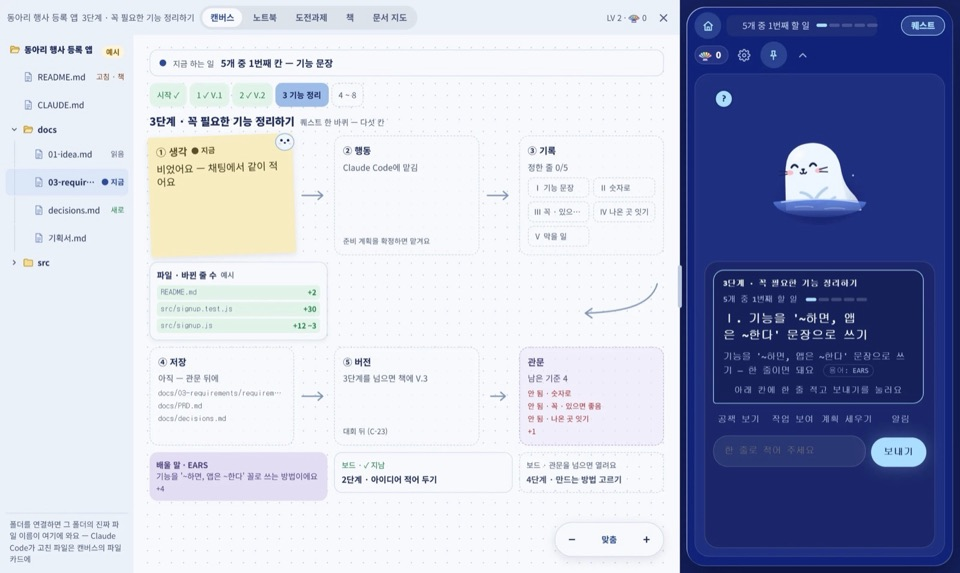
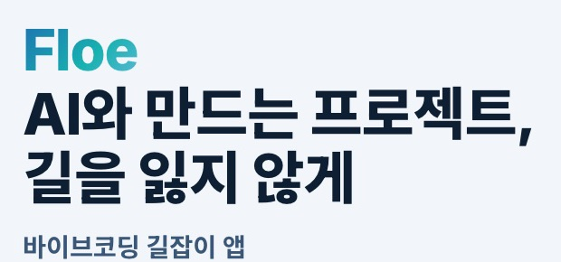
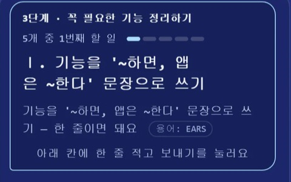
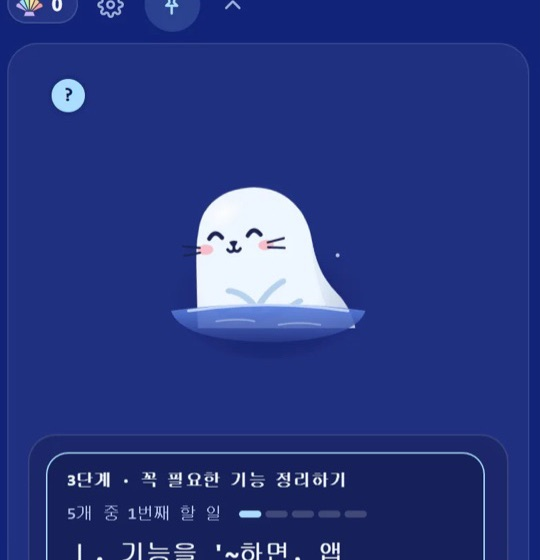
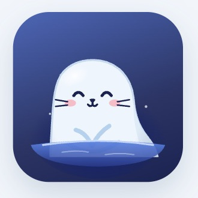

한눈에
- 무엇
- 바이브 코딩 길잡이 데스크톱 앱
- 언제
- 2026.09 – 11
- 내 몫
- 팀장 · 총괄 · AI 연동 (5인 팀)
- 결과물
- Mac · Windows · 우분투 앱, 릴리스 15번
- 상태
- 끝. 11.08 제출 · 11.13 발표 · 평가 Pass. Floe로 나간 대전 창업 One 클럽 AI 바이브코딩 아이디어 경진대회 본선 우수상
- 15
- 릴리스app-v4.0.0 – v11.3.0
- 3
- 운영체제Mac · Windows · 우분투
- 8
- 단계관문과 이해 확인
- 19
- 장10분 발표 덱
만든 것


가까이 본 화면



직접 열어 보기
누구나 열어 볼 수 있는 주소만 놓았습니다.
함께
5인 팀으로 만들었습니다. 화면과 마스코트 플로로, 소개 영상은 팀 작품입니다.

다음 작품, DOTCI
캠퍼스 장소에 도착하면 선배의 쪽지가 열리는 신입생용 웹